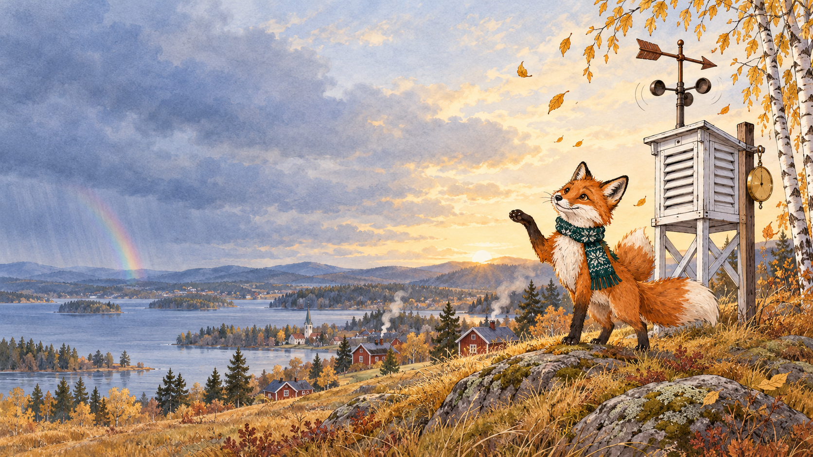
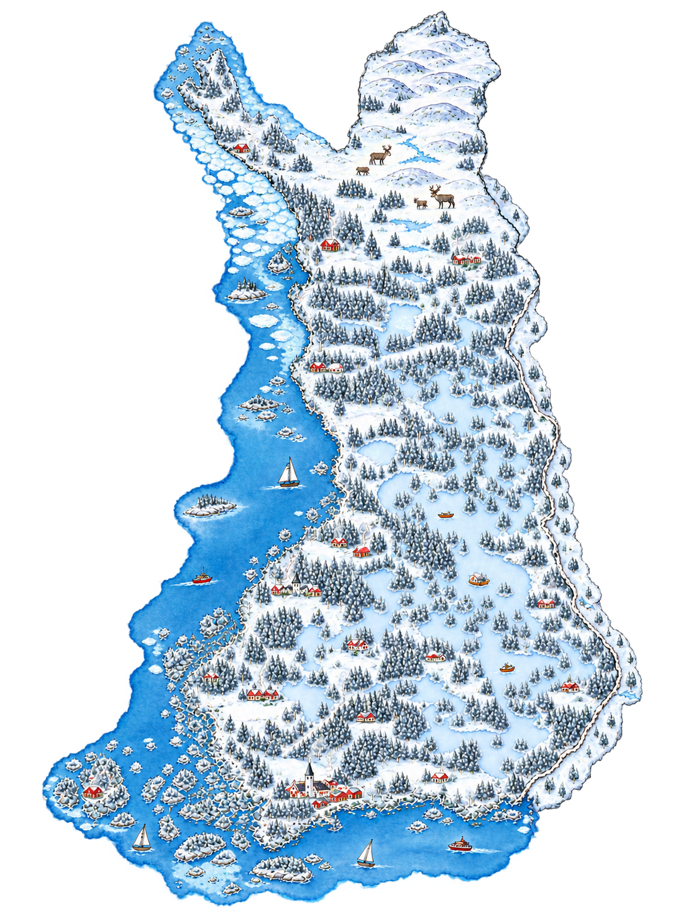

Voltikan sähkösää
Lokakuu 2026 ja näkymät talveen
Lokakuun sää
Lämmin ja tuulinen
+23 %
tuulivoimaa
+2,9 °C
normaalia lämpimämpi
Pörssisähkö lokakuussa
4,77
c/kWh keskimäärin · syyskuusta
−33 %
Kuun kallein päivä · 30.10.
18,6
c/kWh päivän keskihinta
Tuuli tyyntyi, ja Olkiluoto 1 oli
vuorokauden pois verkosta.
Lokakuun sääkartta
Missä sähkö tehtiin ja minne se meni

Hinnat ilman arvonlisäveroa, c/kWh, lokakuun keskiarvo.
Ennuste
Talvi on tulossa
Futuurit: EEX, Finnish Power Base, 30.10.2026, alv 25,5 %, c/kWh.
Sähkövaroitus
Kylmä ja tyyni sää
51
c/kWh maanantaina 2.11. illalla
~34
c/kWh koko viikon, jos sää on
kuin tammikuussa 2024
Sopimusmarkkinan ilmanpaine
Myyjät hinnoittelevat jo talvea
+3,7 %
myyjien energiahinnat lokakuussa
+36 %
toukokuun pohjalta (Voltikan hintaindeksi 13,27 c/kWh)
Näin varaudut talveen
voltikka.fi
Laske oman kotisi hinnat · sähkösää palaa joulukuun alussa